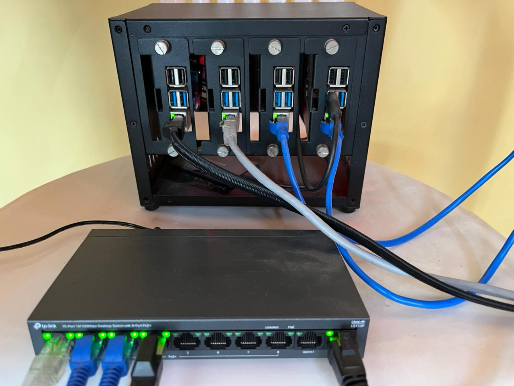
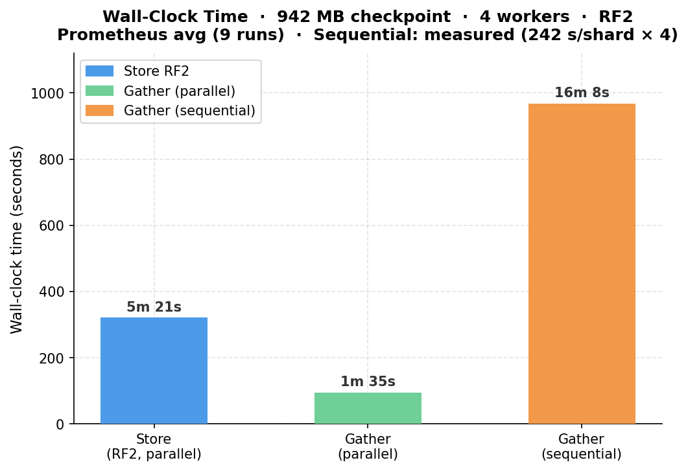
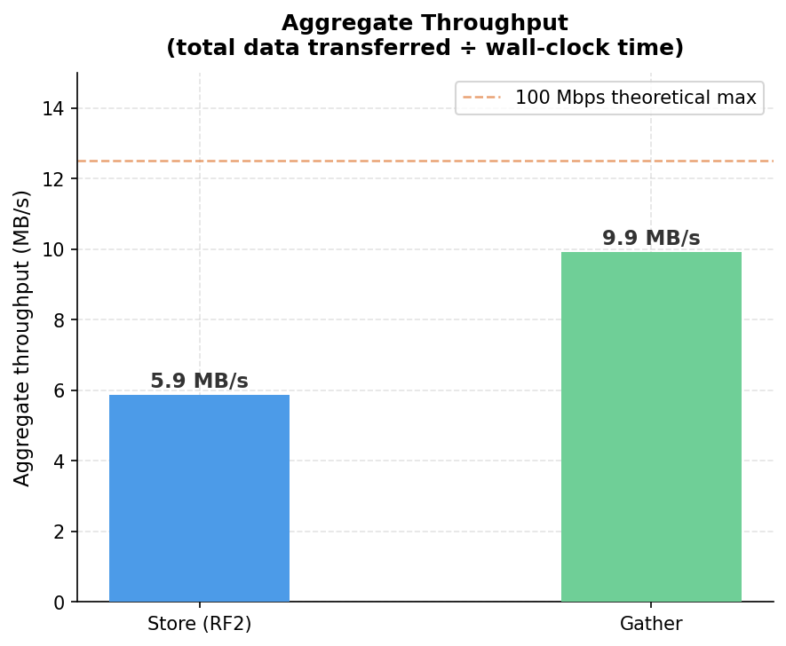
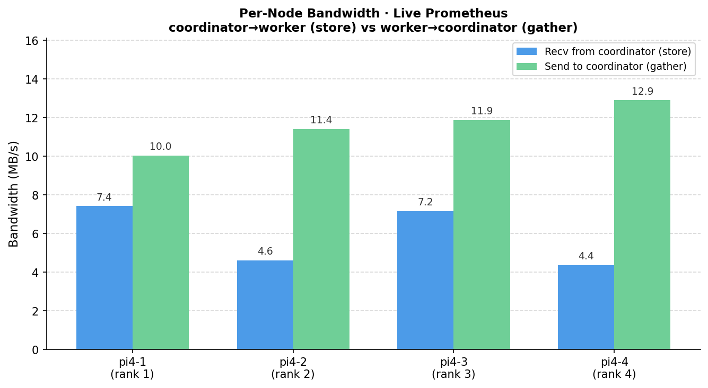
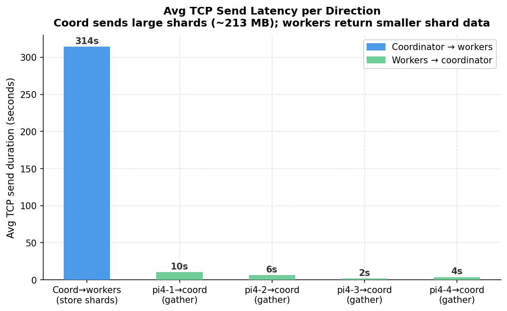
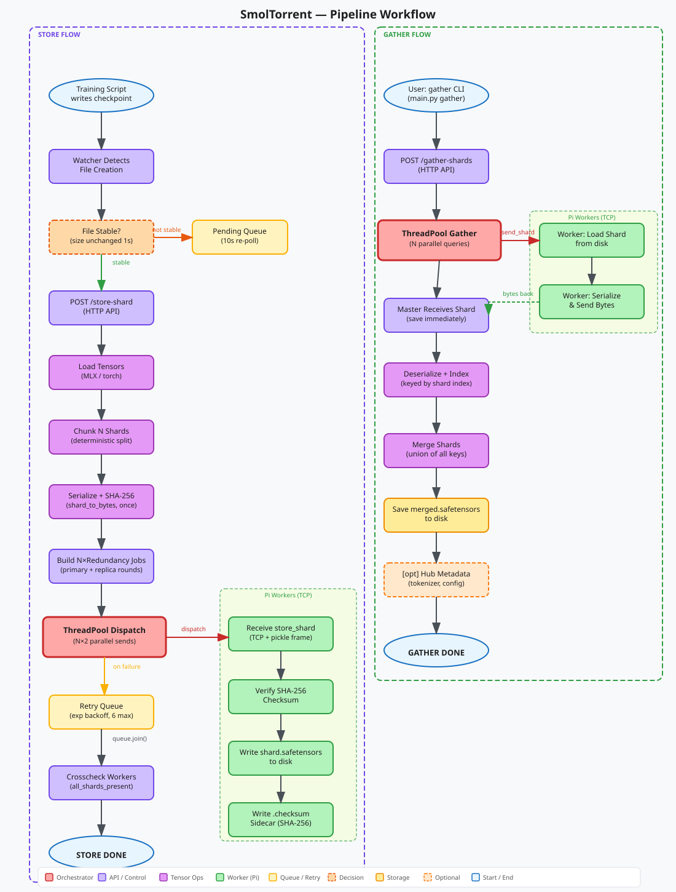
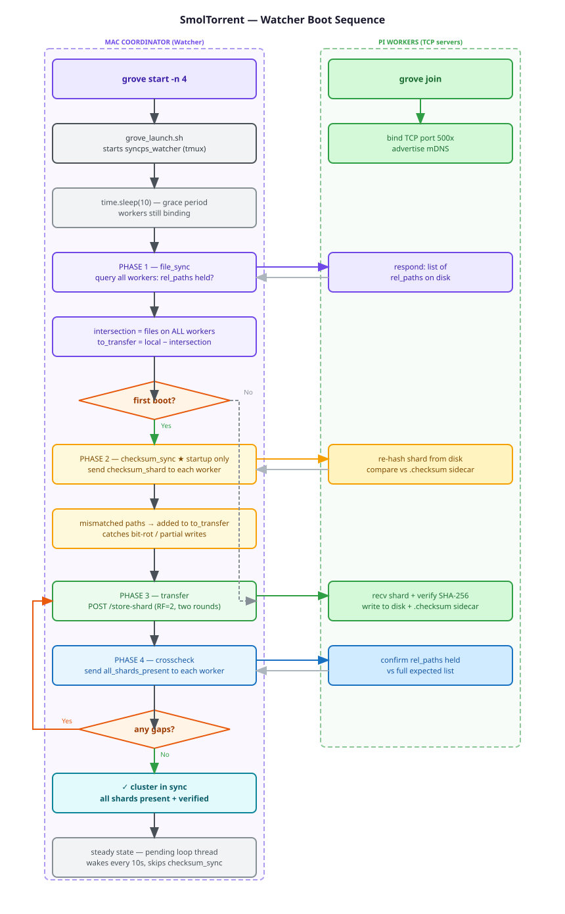

Shards .safetensors checkpoints across worker nodes over TCP —
with SHA-256 verification, replication, and automatic sync.
smoltorrent is a distributed checkpoint storage system that shards .safetensors ML model
checkpoints across a cluster of worker nodes over raw TCP, coordinated from a central machine. Each shard
is stored on two workers (replication factor 2), so any single node failure loses no data. Workers are
discovered automatically via mDNS — no hardcoded IPs. On macOS, peer-to-peer AirDrop / AWDL
discovery runs in parallel for router-free Mac-to-Mac networking. A watcher daemon monitors your checkpoint directory and
pushes new files automatically — no manual intervention needed.

4 workers · RF2 replication · ~100 Mbps Ethernet · 942 MB checkpoint. Wall-clock times from Prometheus (9 runs avg). Sequential baseline measured directly (242 s/shard × 4).




.checksum sidecar; corruption detected at store and re-verified on gather.9200+rank.configs/config.yaml; no IPs hardcoded anywhere.
Monitors ckpt_root for new .safetensors files. On each trigger: file_sync →
checksum_sync (startup only) → transfer → crosscheck.
Files detected while still being written go to a pending list and are re-evaluated every 10 s.
Workers advertise themselves over mDNS (_smoltorrent._tcp.local.) on startup. The coordinator scans the
network and finds all workers without any hardcoded IPs — useful for initial setup or when DHCP reassigns addresses.
On macOS, AirDrop/AWDL discovery runs in parallel for Mac-to-Mac scenarios.
End-to-end flow for store (left) and gather (right). The watcher daemon auto-triggers store on new checkpoint files; gather is invoked via CLI or API. Dashed arrows indicate optional or fallback paths.

What happens when the cluster starts. Left lane: Mac coordinator. Right lane: Pi workers. Startup-only path (checksum_sync) shown in amber; loop-back on gaps in red.

Coordinator (any macOS / Linux machine)
├── FastAPI server backend/api.py ← /store-shard, /gather-shards, /discover
├── Watcher daemon watcher/watch.py ← auto-syncs new checkpoints
├── Discovery discovery/ ← mDNS + AirDrop device discovery
└── Workers × N algorithms/SyncPS/worker.py ← TCP listener on each worker node
Replication (factor 2):
Shard 0 → Worker 1 (primary) + Worker 2 (replica)
Shard 1 → Worker 2 (primary) + Worker 3 (replica)
Shard 2 → Worker 3 (primary) + Worker 4 (replica)
Shard 3 → Worker 4 (primary) + Worker 1 (replica)
Network: LAN, VPN, or any TCP-reachable topology (~100 Mbps tested over Tailscale)Quick start / testing — no SSH config needed. Workers discover the master over mDNS and self-register:
# Master: advertise and wait for N workers to join
grove start -n 4
# Worker (each Pi or Mac on the same network): TUI → select master → Enter
grove joinProduction / serious runs — SSH-based setup with rsync, tmux, and full cluster management:
# Edit configs/config.yaml with worker SSH aliases + IPs, then:
bash scripts/launch.sh
# ── cluster is now up, API server at localhost:8000 ──
# Store / gather manually (watcher handles this automatically — grove CLI preferred over curl):
grove store --ckpt-path /path/to/checkpoints/model.safetensors
grove gather --ckpt-path /path/to/checkpoints/model.safetensors
# Discover live workers (mDNS)
curl http://<master-ip>:8000/discoverOSError: [Errno 98] Address already in use, the API server (8000),
watcher metrics (8001), or a worker metrics port (9200+rank) is still bound from a previous run.
launch.sh frees these automatically via fuser -k on each launch.
Any macOS or Linux machine can act as coordinator or worker. This is the exact setup we developed and tested on:
| Role | Hardware | Chip | OS | Python | RAM | Storage | Stack |
|---|---|---|---|---|---|---|---|
| Coordinator | Apple Mac mini M4 | Apple M4 (arm64) | macOS 26.2 Tahoe | 3.13.3 | 16 GB | 256 GB SSD | uv 0.9 · safetensors 0.7 · PyTorch 2.11 · MLX 0.31 |
| Workers × 4 | Raspberry Pi 4 Model B Rev 1.5 | BCM2711 Cortex-A72 (aarch64) | Debian 13 Trixie (kernel 6.12) | 3.13.5 | 4 GB | 64 GB microSD | uv 0.9 · safetensors 0.7 · PyTorch 2.11 |
Workers can be any Linux or macOS machine — not Pi-specific. Coordinator requires Apple Silicon for MLX tensor ops; workers are platform-agnostic (PyTorch only).
smoltorrent is released under the MIT License.
Contributions welcome — visit the GitHub repository.